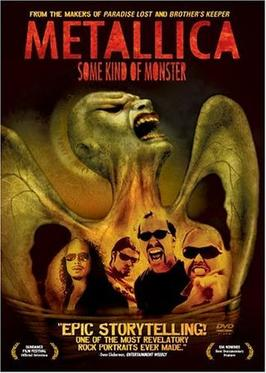
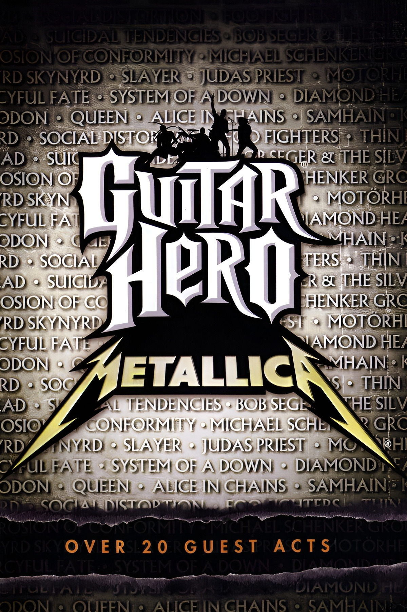
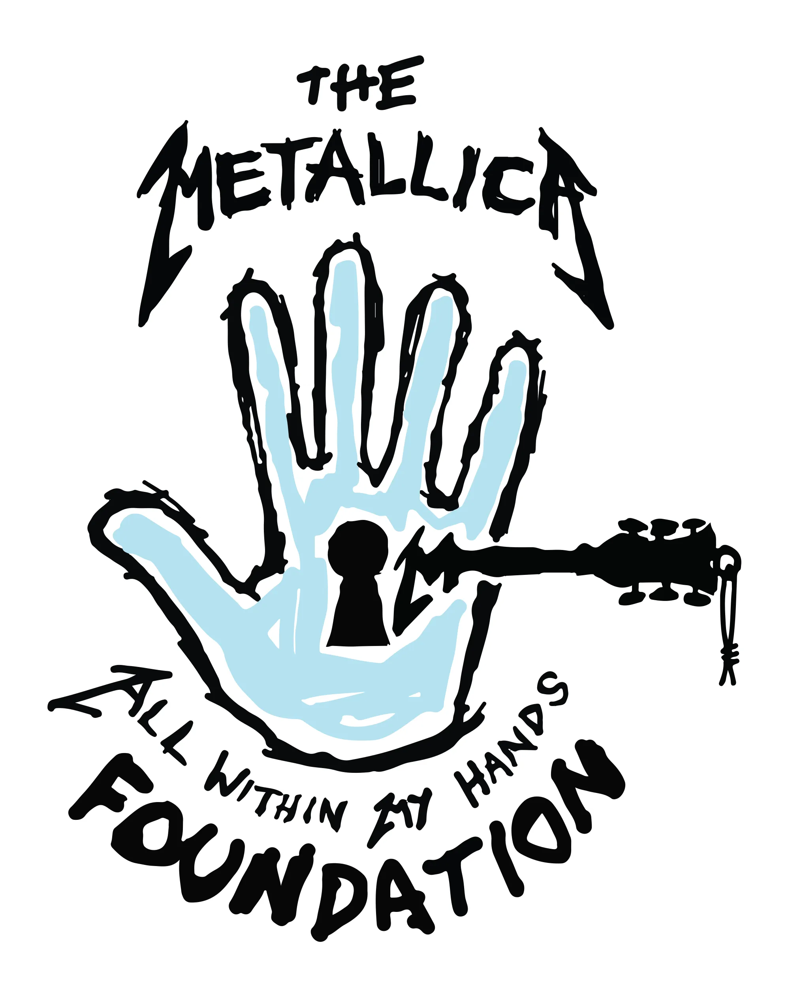

Filmek

Through the Never
A Metallica 3D koncertfilmje, amely egy fiktív történetszállal egészíti ki az élő koncertfelvételeket. A film különleges vizuális megoldásai és monumentális színpadi látványa miatt vált egyedivé.
Megtekintés
Some Kind of Monster
Dokumentumfilm az St. Anger album készítésének időszakáról. Őszinte betekintést nyújt a zenekar belső konfliktusaiba, válságába és újjáépülésébe.
Megtekintés
S&M
A Metallica és a San Francisco Symphony közös koncertprojektje, ahol a zenekar dalai szimfonikus hangszereléssel szólalnak meg, különleges zenei élményt teremtve.
MegtekintésEgyéb projektek

Guitar Hero: Metallica
A népszerű zenei videojáték-sorozat külön Metallica-kiadása, amely a zenekar legismertebb dalait és pályafutásának fontos állomásait dolgozza fel interaktív formában.
Megtekintés
All Within My Hands Foundation
A Metallica jótékonysági alapítványa, amely oktatási, katasztrófasegélyezési és közösségi programokat támogat világszerte.
Megtekintés